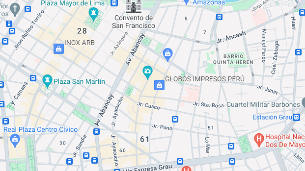
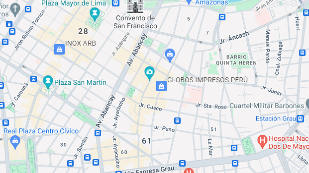

El Centro Històrico de Lima en la actualidad se ha convertido en un problema socio-urbano el cual, a generado molestias y apoderaciòn en diversos espacios pùblicos. La ocupaciòn del espacio público en el Centro Histórico de Lima se debe a la crisis econòmica y el desempleo. Durante dècadas, se han realizado diversas reubicaciones de estos ambulantes para despejar las calles pùblicas. Una soluciòn fueron los campos feriales, que eran àreas pùblicas con disponibilidad municipal, que se habilitaron para aglomerar a los ambulantes. Sin embargo, esto fracasó debido a la poca venta y la restringión de dedicaciòn al comercio.

Dentro del centro de lima se presenta varios problemas a raiz de una variante que seria el servicio ambulatorio informal estas pueden ser que las calles y aceras abarrotadas y bloqueadas por los vendedores que ocupan los espacios públicos, dificultando la salida de peatones y vehículos, además de un desorden y falta de supervisión y control que genera un ambiente caótico. Además, hay cuestiones de seguridad como robos, ataques y venta de productos pirateados o desconocidos, y un impacto negativo en la estética de la ciudad por la acumulación de puestos y mercancías que afecta la imagen del centro histórico. Todo esto genera conflictos con las autoridades que intentan regularlos o reubicarlos, y se necesita una regulación efectiva que brinde alternativas viables a los vendedores ambulantes.

El objetivo es desalojar, remediar y reubicar a los vendedores ambulantes de áreas históricas para que no se vean afectados. Esta página indicará su ubicación en zonas específicas para evitar confusiones y aglomeraciones.

Si no se regula el comercio ambulante en el centro de Lima en 10 años, se proyecta un aumento del 30% en vendedores ambulantes, deterioro de la infraestructura urbana, incremento del 25% en la criminalidad, disminución del 20% en la actividad comercial formal y un impacto negativo en el turismo. Por otro lado, si se controla y regula el comercio ambulante, se proyecta una disminución del 40% en vendedores ambulantes, mejora de la infraestructura urbana, reducción del 30% en la criminalidad, aumento del 25% en la actividad comercial formal y un impacto positivo en el turismo.
Estas proyecciones se basan en estudios de la Universidad Nacional Mayor de San Marcos, el Instituto Peruano de Economía, la Organización Mundial de la Salud y la Comisión Económica para América Latina y el Caribe.
 
